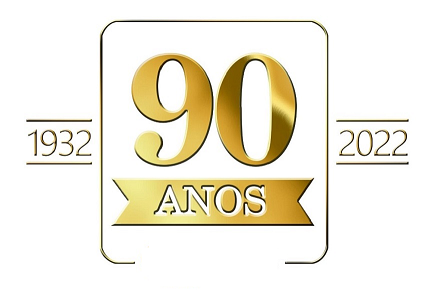

Com início de suas atividades em 1932, o Colégio Eleodoro é a primeira instituição escolar de Cascavel, fundada antes mesmo da emancipação da cidade. O início foi com dificuldade, sem apoio político, somente com a vontade dos professores e da comunidade de fazer acontecer, sempre ofertando ensino de qualidade para milhares de estudantes que por ali passaram. "Acreditamos que a educação transforma o mundo".
